용접기사 (2012-08-26 기출문제)
1과목: 기계제작법
1. 선반작업에서 지름 50mm 이고 소재의 길이가 400mm인 둥근 봉을 절삭속도 100m/min, 이송량 0.3mm/rev로 가공할 때 가공시간은 약 몇 분 (min) 정도 걸리는가?
- 6
- 4
- 2
- 1
(정답률: 28%)

2. CNC공작기계와 산업용 로봇, 자동반송시스템, 자동화창소 등을 총괄하여 중앙의 컴퓨터로 제어하면서 소재의 공급에서부터 가공, 조립, 출고까지 관리하는 생산방식으로 공장전체 시스템을 무인화하여 생산관리의 효율을 최대로 한 유연성있는 생산시스템은?
- AMS
- FMS
- DNC
- 서보기구
(정답률: 60%)
3. 다음 중 공구수명의 판정기준에 속하지 않는 것은?
- 절삭저항의 변화
- 가공명에 나타나는 광택 및 반점
- 크레이터(creater) 마모 또는 플랭크(flank) 마모의 깊이
- 절삭속도와 이송속도
(정답률: 75%)
4. 딥 드로잉으로 지름 60mm, 높이 50mm의 원통 용기를 만들고자 한다. 회전체의 소재(素材)지름은 약 몇 mm인가? (단, 밑바닥 모서리는 극히 작다.)
- 62.5
- 125
- 250
- 300
(정답률: 45%)
5. 치공구의 3요소가 아닌 것은?
- 위치결정면
- 클램프
- 위치결정구
- 공작물
(정답률: 80%)
6. 입도가 작고 연한 숫돌을 작은 압력으로 가공물 표면에 가압하면서 가공물에 이송을 주고, 숫돌을 좌우로 진동시키면서 가공하는 방법은?
- 래핑(lapping)
- 호닝(honing)
- 숏 피닝(shot peening)
- 수퍼피니싱(super finishing)
(정답률: 69%)
7. 테르밋용접(thermit welding)을 설명한 것은?
- 원자수소의 반응열을 이용한 것
- 전기용접과 가스용접을 결합한 것
- 액체산소를 이용한 가스용접의 일종
- 산화철과 알루미늄의 반응열을 이용한 것
(정답률: 75%)
8. 수기가공에서 정 작업을 C, 금긋기 작업을 M, 중 작업을 F, 스크레이퍼 작업을 S라 할 때 작업 순서가 바르게 된 것은?
- M → F → C → S
- M → C → F → S
- F → M → S → C
- F → C → S → M
(정답률: 78%)
9. 열처리 중에서 풀림(annealing)의 목적이 아닌 것은?
- 가스 및 불순물의 방출과 확산을 일으키고 내부응력을 저하
- 가공에서 연화된 재료의 경화
- 조직의 미세화 및 표준화
- 금속결정입자의 균일화
(정답률: 48%)
10. 소성가공에서 금속재료의 주괴로부터 판재, 봉재, 관재, 단조재 등을 성형하는 1차 가공과 이것들을 소재로 하여 성형하는 2차 가공으로 나눌 때 다음 중 2차 가공에 속하는 것은?
- 전조가공
- 인발가공
- 압연가공
- 압출가공
(정답률: 48%)
11. 목형에 적당한 도장을 하는 이유 중 가장 중요한 것은?
- 미관상 보기 좋게 하기 위하여
- 목재의 수축을 방지하기 위하여
- 주형에서 목형이 잘 빠져 나올 수 있게 하기 위하여
- 보관이나 정리할 때 도료의 색으로 구별을 쉽게 하기 위하여
(정답률: 74%)
12. 두께가 다른 여러 장의 강재 박판(薄板)을 겹쳐서 부채살 모양으로 모은 것이며 물체 사이에 갑입하여 측정하는 기구는?
- 와이어 게이지
- 롤러 게이지
- 틈새 게이지
- 드릴 게이지
(정답률: 66%)
13. 다음의 단조 양식 중 자유단조에 속하지 않는 것은?
- 늘리기(drawing down)
- 엡셋팅(upsetting)
- 블랭킹(blanking)
- 굽히기(bending)
(정답률: 64%)
14. 밀링 작업에서 매끈한 가공면을 얻기 위해서는 절삭속도와 이송을 어떻게 하는가?
- 절삭속도를 크게 이송을 작게 한다.
- 절삭속도를 작게 이송을 크게 한다.
- 절삭속도를 크게 이송을 크게 한다.
- 절삭속도를 작게 이송을 작게 한다.
(정답률: 65%)
15. 분말형태의 용제로 대기로부터 용접부를 차단한 채 아크열로 용제, 심선 및 모재를 녹여서 행하는 아크 용접법은?
- 불활성가스 쉴드 아크 용접법
- 서브머어지드 아크 용접법
- 플라스마 아크 용접법
- 금속 아크 용접법
(정답률: 63%)
16. 렌치(wrench), 스패너(spanner) 등 작은 공구를 단조할 때 다음 중 가장 적합한 것은?
- 자유단조(free forging)
- 로터리 스웨이징(rotary swaging)
- 프레스 가공(press working)
- 형 단조(die forging)
(정답률: 62%)
17. 공기 마이크로미터의 특징을 설명한 것 중 틀린 것은?
- 배율이 높다.
- 정밀도가 좋다.
- 압축 공기원이 필요 없다.
- 1개의 피측정물의 여러 곳을 1번에 측정한다.
(정답률: 74%)
18. 압영 롤과 압연재 사이의 마찰계수를 μ, 롤 반지름 방향의 압연력을 Pr이라고 할 때, 롤이 재료를 끌어 당기기 위한 관계식으로 맞는 것은?
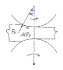
- μ < tan a
- μ ≥ tan a
- μ < sin a
- μ ≥ sin a
(정답률: 58%)
19. 선삭에서 탄소강 가공시 절삭저항 3분력 중 절삭저항이 가장 큰 분력은?
- 배분력
- 이송분력
- 주분력
- 횡분력
(정답률: 62%)
20. 다음 중 재료의 표면경화법에 해당하지 않는 것은?
- 침탄법
- 노말라이징(normaliziong)
- 고주파담금질법
- 화염담금질법
(정답률: 73%)
2과목: 재료역학
21. 그림과 같은 단순보에서 C지점에 집중 하중 W가 작용할 때, 탄성 처짐 곡선에서 처짐각이 가장 큰 위치는? (단, 보의 굽힘강성 EI는 일정하고, a>b 이다.)
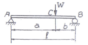
- A점에서
- B점에서
- C점에서
- AC점의 중간점에서
(정답률: 48%)
22. 막대의 한 끝이 고정되고 다른 끝에 집중 하중이 작용할 때, 막대의 양단에서 국부변형이 발생하고 양단에서 멀어질수록 그 효과가 감소된다는 사실과 관계있는 것은?
- 카스틸리아노(Castigliano)의 정리
- 상베낭(Saint-Venant)의 원리
- 트레스카(Tresca)의 원리
- 맥스웰(Maxwell)의 정리
(정답률: 56%)
23. 단면적이 각각 A1, A2이고, 탄성계수가 각각 E1, E2 인 길이 ℓ인 재료가 강성판 사이에서 인장하중 P를 받아 탄성 변형을 했을 때, 각 재료 내부에 생기는 수직응력은? (단, 2개의 강성판은 항상 수평을 유지한다.)
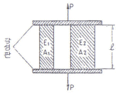
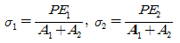
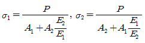
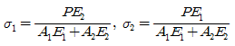
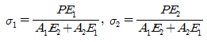
(정답률: 50%)
24. 원형 단면축이 비틀린 모멘트를 받을 때 최대 전단응력 r에 대한 설명으로 틀린 것은?
- 비틀림 모멘트에 비례한다.
- 축 지름의 3제곱에 반비례한다.
- 극단면계수에 비례한다.
- 극단면 2차모멘트에 반비례한다.
(정답률: 50%)
25. 탄성계수가 E이고 포아송 비가 v인 재료의 전단탄성계수 G를 표현한 올바른 식은?
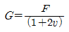
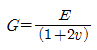
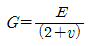
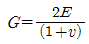
(정답률: 74%)
26. 양단 고정보의 중앙에 집중 하중 P가 작용할 때 굽힘모멘트 선도(BMD)는?
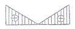
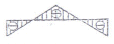
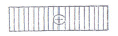
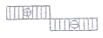
(정답률: 69%)
27. 400rpm으로 회전하는 바깥지름 60mm, 안지름 40mm인 중공 단면축이 10kW의 동력을 전달할 때 비틀림 각도는 약 몇 도인가? (단, 전단 탄성계수 G=80GPa, 축 길이 L=3m이다.)
- 0.2
- 0.5
- 0.7
- 1
(정답률: 36%)
28. 그림의 h형 단면의 도심축인 Z축에 관한 회전 반지름(radius of gyration)은 얼마인가?
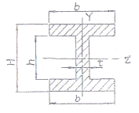
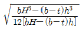
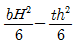
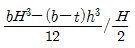
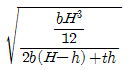
(정답률: 46%)
29. 그림과 같은 보에 하중 P가 작용하고 있을 대, 이 보에 발생하는 최대 굽힘응력은?
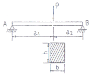
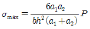
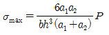
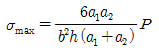
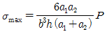
(정답률: 50%)
30. 원형 단면 기둥 A와 정사각형 단면 기둥 B가 동일한 세장비를 가질 때 기둥의 길이 비
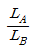
은? (단, 각 경우에서 원형 단면의 지름과 정사각형 단면에서 한 변의 길이는 20cm 이다.)- √3/2
- √5
- √3
- √5/2
(정답률: 40%)
31. 단면적이 2cm×3cm이고, 길이 1.5m의 연강봉에 인장 하중이 작용하여 0.1cm 늘어났다. 이 때 축척된 탄성 에너지의 크기는 몇 Nㆍm인가? (단, 탄성계수 E = 210GPa 이다.)
- 42
- 420
- 84
- 126
(정답률: 32%)
32. 단면적이 같은 정사각형과 원형단면의 보에서 정사각형 단명의 최대 전단응력은 원형단면의 최대 전단응력의 몇 배인가? (단, 두 단면에 작용하는 전단력의 크기는 같다.)
- 8/7
- 9/8
- 8/9
- 7/8
(정답률: 27%)
33. 45°각의 로제트 게이지로 측정한 결과 Ex=400×10-6, Ey=200×10-6, rxy=200×10-6일 때 주응력은 약 몇 MPa인가? (단, 포아송 비 v=0.3, 탄성계수 E=206GPa 이다.)
- σ1=100, σ2=56
- σ1=110, σ2=66
- σ1=120, σ2=76
- σ1=130, σ2=86
(정답률: 48%)
34. 폭×높이=300mm×300mm의 단면을 가진 보가 굽힘을 받아 최대 굽힘 응력이 90MPa이 되었다. 이 단면에 작용한 굽힘 모멘트는 몇 kNㆍm인가?
- 4⑤
- 5⑤
- 6⑤
- 7⑤
(정답률: 16%)
35. 강선의 지름이 6mm 이고 코일의 반지름이 50mm인 10회 감긴 스프링이 있다. 이 스프링에 100N의 힘이 작용할 때 처짐량은 약 몇 mm인가? (단, 재료의 전단탄성계수 G=82GPa 이다.)
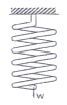
- 55.3
- 65.3
- 75.3
- 85.3
(정답률: 28%)
36. 그림에서 무게 39N인 물체 W를 비탈위로 올리기 위한 최소한의 힘 P는 몇 N인가? 9단, 마찰계수는 1/3 이다.)
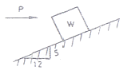
- 22
- 30
- 34
- 38
(정답률: 58%)
37. 그림과 같은 정사각형 단면을 가지는 짧은 기둥의 측면에 흠이 파여 있을 때 도심에 작용하는 축하중 W로 인해 단면 n-n'에 발생하는 최대 압축응력의 크기는?
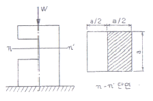
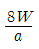
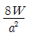
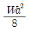
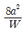
(정답률: 60%)
38. 단면 치수가 8mm×24mm인 강대가 인장력 P=15kN을 받고 있다. 그림과 같이 30° 경사진 면에 작용하는 전단 응력은 약 몇 MPa 인가?
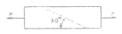
- 19.5
- 29.3
- 33.8
- 67.6
(정답률: 43%)
39. 자유단에 집중하중 P를 받는 외팔보의 최대 처짐 δ1과 P=wL이 되게 균일 분포하중(w)이 작용하는 외팔보의 자유단 처짐 δ2의 처짐비 δ2/δ1는 얼마인가? (단, 보의 굽힘 강성은 EI로 일정하다.)
- 8/3
- 3/8
- 5/8
- 8/5
(정답률: 63%)
40. 그림과 같이 등분포하중이 작용하는 보에서 최대 전단력의 크기는 몇 kN인가?
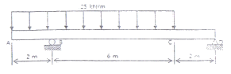
- 50
- 100
- 150
- 200
(정답률: 43%)
3과목: 용접야금
41. 용접 슬래그의 산 또는 염기의 강도는 용접할 때 화학반응에 중요한 역할을 하고 있다. 염기도 표시로 옳은 것은? (단, A=산성 성분의 총합, B=염기성 성분의총합, As=용접 슬래그의 염기도)
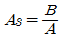
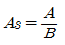
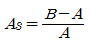
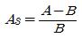
(정답률: 38%)
42. 연강용 피복 아크 용접봉의 E4316에서 숫자 16의 의미를 설명한 것으로 맞는 것은?
- 전극봉의 종류
- 용접자세
- 피복제 계통
- 극성의 방향
(정답률: 60%)
43. 스테인리스강의 종류에서 내식성, 가공성 및 용접성이 가장 우수한 것은?
- 오스테나이트계 스테인리스강
- 마텐자이트계 스테인리스강
- 페라이트계 스테인리스강
- 펄라이트계 스테인리스강
(정답률: 86%)
44. 맞대기 용접, 필릿용접 등의 비드표면과 오재와의 경계부에 발생되는 균열이며, 구속응력이 클 때 용접부의 가장 자리에서 발생하여 성장하는 균열은?
- 비드 및 균열
- 토 균열
- 설퍼 균열
- 충상 균열
(정답률: 85%)
45. 용접금속에 용해량이 증가하면 인장강도는 증가하지만 연신율과 충격치가 저하하며 석출하여 시효경화를 일으키고 청열취성에 가장 큰 영향을 주는 원소는?
- 질소
- 붕소
- 수소
- 규소
(정답률: 56%)
46. 용착금속의 응고 과정을 올바르게 설명한 것은?
- 강의 다층용접에서는 앞의 층이 다음 층의 열에 의해 재가열되므로 주조조직이 거칠어진다.
- 용융금속 내에서는 냉각할 때 전방측면부터 응고가 시작하여 결정이 측면으로 성장한다.
- 최초로 응고하는 것은 비교적 불순물이 많은 강이 된다.
- 최후로 응고하는 중앙상부에는 비교적 많은 불순물이 고이게 된다.
(정답률: 56%)
47. Fe-C 평형 상태도에서 순철의 자기(A2)변태점 온도는?
- 723℃
- 1492℃
- 910℃
- 768℃
(정답률: 69%)
48. 강괴(鋼塊)가 응고할 때 최초에 응고하는 부분과 나중에 응고하는 중심부에서 그 화학성분이 장소적으로 달라지는 것을 무엇이라고 하는가?
- 포정
- 포석
- 편석
- 편정
(정답률: 77%)
49. 금속 결정 중에 점결함(point defect)을 도입하는 방법이 아닌 것은?
- 온도 상승에 따른 열평형적 형성
- 고온에서 급냉에 의한 동결
- 입자선에 의한 조사
- 결정의 자유표면
(정답률: 41%)
50. 주철의 용접 시 예열을 통하여 얻는 효과로 틀린 것은?
- 열응력에 기인한 주조품 내의 잔류응력 감소
- 영영향부의 경도의 강화
- 사용 중인 주조품의 탄수화물 등의 오염 저감
- 용접균열방지 및 변형의 저감
(정답률: 69%)
51. 노치가 있는 시험편을 각 온도에서 파괴하면, 어떤 온도를 경계로 하여 시험편이 급격히 취성화 되는 것을 알 수 있는데, 이 때의 온도를 무엇이라 하는가?
- 노치온도
- 저온온도
- 천이온도
- 노치감도
(정답률: 69%)
52. 한국산업표준(KS)에서 연강용 피복 아크 용접봉 심선의주요 성분으로 규정하지 않은 것은?
- C
- Si
- Mo
- Mn
(정답률: 50%)
53. 철 중에 침입형 원소로 고용할 수 없는 것은?
- 탄소
- 수소
- 질소
- 니켈
(정답률: 40%)
54. 강의 Fe-C계 평형상태도에서 나타나는 기본적인 3상(相)이 아닌 것은?
- 오스테나이트(austenite)
- 페라이트(ferrite)
- 시멘타이트(cementite)
- 마텐자이트(martensite)
(정답률: 34%)
55. 피복 아크 용접봉 중 저수소계(E4316)용접봉에 함유된 수분을 제거하기 위한 방법으로 가장 적당한 것은?
- 50~100℃ 정도로 2~3시간 정도 건조 후 사용
- 100~150℃ 정도로 1~2시간 정도 건조 후 사용
- 150~250℃ 정도로 2~3시간 정도 건조 후 사용
- 300~350℃ 정도로 1~2시간 정도 건조 후 사용
(정답률: 78%)
56. 금속재료 중 일반적으로 탄소당량(carbon equivalent) 산출식과 관계가 없는 원소는?
- 망간(Mn)
- 니켈(Ni)
- 크롬(Cr)
- 아연(Zn)
(정답률: 74%)
57. 격자결함 중 점 결함에 속하는 것은?
- 전위
- 적층결함
- 격자간 원자
- 수축공
(정답률: 25%)
58. 다음 중 면신입방격자에 속하는 금속은?
- Nb
- Mo
- Zn
- Al
(정답률: 62%)
59. TIG 용접에 사용되는 보호가스가 아닌 것은?
- 헬륨
- 아르곤+헬륨
- 아르곤
- 헬륨+프로판
(정답률: 79%)
60. 다음 중 브라베(Bravais) 격자의 종류에 속하지 않는 것은?
- 단순입방격자
- 면심사방격자
- 페심입방격자
- 고심입방격자
(정답률: 53%)
4과목: 용접구조설계
61. 다음 보기와 같은 용접부의 기본 기호에 대한 명칭은?
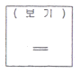
- 가장자리 용접
- 겹침 이음
- 서페이싱 이음
- 경사 이음
(정답률: 39%)
62. 초음파 검사에서 물체 내에 전달되는 초음파(종파)의 속도 C를 구하는 식은? (단, E:탄성계수, μ:포와송의 비, d: 밀도)
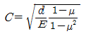
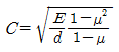
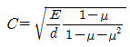
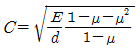
(정답률: 22%)
63. 그림과 같이 모서리 이음, T이음 등에서 강의 내부에 모재표면과 평향하게 층상으로 발생되는 균열은?
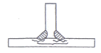
- 토 균열(toe crack)
- 델라네이션
- 라멜라 테어(lamella tear)
- 루트 균열(root crack)
(정답률: 69%)
64. 용접구조물 설계 시 주의사항에 대한 설명 중 틀린 것은?
- 용접선의 집중, 접근 및 교차시키지 말아야 한다.
- 이음의 역학적 특성을 고려하여 구조산 불연속부를 둔다.
- 용접순서는 중앙에서 시작하여 밖으로 향하여 용접할 수 있도록 한다.
- 단면에 직각방향으로 인장하중이 작용할 경우 판의 압연방향에 주의한다.
(정답률: 58%)
65. 측면 필릿 이음에서 필릿 용접부의 단면에서 루츠로부터 표면가지의 최단 거리를 무엇이라고 하는가?
- 루트 간격
- 용접부의 루트
- 다리길이
- 목의 실제 두께
(정답률: 63%)
66. 주철의 예열과 관련하여 예열의 요구정도에 대한 일반적인 주안점으로 틀린 것은?
- 탄소량이 높을수록 예열온도는 증가한다.
- 저강도 주철은 고강도재에 비하여 일반적으로 낮은 예열 온도를 적용한다.
- 복잡한 형상의 주물은 변형이나 잔류응력을 조절하기 위하여 통상 높은 예열온도를 적용한다.
- 가단주철이나 구상흑연주철은 회주철이나 백주철에 비하여 높은 예열온도를 적용한다.
(정답률: 24%)
67. 강판의 두께 20mm, 길이 3m를 V형 홈으로 맞대기용접이음을 하고자 한다. 이 용접부에 사용될 용접봉의 사용량은 약 몇 kgf 인가? (단, 용착 금속의 비중은 7.85, 용착효율은 65%, V형 홈용접부 단면적은 2.9cm2로 한다.)
- 10.5
- 27.3
- 7.5
- 17.6
(정답률: 16%)
68. 모재의 용융된 부분의 가장 높은 점과 용접하는 면의 표면과의 거리를 무엇이라 하는가?
- 열영향부
- 덧살
- 용접선
- 용입
(정답률: 13%)
69. 용접에 의한 균열의 종류 중에서 토(toe)균열에 속하는 것은?
- 맞대기 용접, 필릿 용접 등의 비드 표면과 모재와의 경계부에 생기는 균열
- 냉각속도가 빠르거나 크레이터의 처리가 잘못되어 생기는 균열
- 용착금속의 밑과 모재 면에 생기는 균열
- 모재의 유황이 편석 되어 있을 때 이 부분에 생기는 균열
(정답률: 45%)
70. 용접 경비를 줄이기 위한 방법이 아닌 것은?
- 용접이음부가 적은 경제적인 설계를 한다.
- 설계자나 현도작성자는 가능한 한 조각(scrap)이 적게 나오도록 재료의 사용계획을 작성한다.
- 용접작업 시 조립용 지그, 용접지그, 변형방지용 지그등을 사용한다.
- 용착효율이 좋을 때는 용착속도가 낮은 용접봉을 사용한다.
(정답률: 79%)
71. 일반적으로 용접 후 용접변형을 교정하는 방법이 아닌 것은?
- 역변형법
- 피닝법
- 롤러에 거는 방법
- 절단에 의해 성형하고 재 용접하는 방법
(정답률: 50%)
72. 그림과 같이 판 두께(t) 10mm, 용접선 유효길이(ℓ) 300mm, 용접선에 직각인 굽힘 모멘트 Mb = 30000kgfㆍmm가 작용될 때 용접부에 작용하는 굽힘 응력은 몇 kgf/mm2 인가?
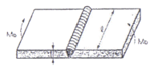
- 6
- 7
- 8
- 9
(정답률: 35%)
73. 용접 시 아래보기 자세로 용접하기 위해 사용되는 회전대를 무엇이라고 하는가?
- 용접 바이스(Vise)
- 용접 웰더(Welder)
- 용접대(Base Die)
- 용접 매니퓰레이터(Manipulator)
(정답률: 67%)
74. 다음 중 용접이음 효율(η)을 바르게 나타내는 것은?
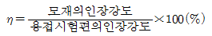
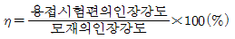
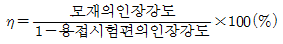
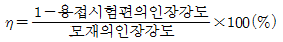
(정답률: 67%)
75. 중판(中板)이상의 두꺼운 판의 용접을 위한 홈 설계시 고려해야할 사항으로 틀린 것은?
- 홈의 단면적은 가능한 작게 한다.
- 적당한 루트 면과 루트 간격을 만들어 준다.
- 루트 반지름은 가능한 작게 한다.
- 최소 10° 정도는 전후좌우로 용접봉을 움직일 수 있는 홈 각도가 필요하다.
(정답률: 72%)
76. 한 부분의 몇 층을 용접하다가 이것을 다음 부분의 층으로 연속시켜 전체가 계단형태의 단계를 이루도록 용착시켜 나가는 용착법은?
- 비석법(skip method)
- 전진블록법(block method)
- 케스케이드법(cascade method)
- 대칭법(symmetry method)
(정답률: 78%)
77. 열적구속도시험이라고도 하며 열의 흐름을 두 방향이나 세 방향으로 하여 비드에 발생하는 균열을 검사하는 시험은?
- CTS(controlled thermal severity test) 균열시험
- T형 필릿 균열시험
- 휘스코 균열시험(Fisco cracking test)
- 리하이(Lehigh) 구속 균열시험
(정답률: 62%)
78. 용접변형 방지법에서 냉각법에 속하지 않는 것은?
- 수냉동판 사용법
- 살수법
- 석면포 사용법
- 수냉 침수법
(정답률: 58%)
79. 각 변형의 방지대책 설명으로 적합하지 않은 것은?
- 개선 각도는 작업에 지장이 없는 한도 내에서 작게 하는 것이 좋다.
- 판 두께가 얇을수록 첫 패스 측의 개선 깊이를 크게한다.
- 판 두께와 개선 형상이 일정할 때 용접봉 지름이 작은 것을 이용한다.
- 용접속도가 빠른 용접방법을 선택한다.
(정답률: 30%)
80. 다음 중 일반적으로 용접성이 양호한 탄소당량(Ceq)은?
- 0.3~0.4%
- 0.5~0.6%
- 0.7~0.8%
- 0.9~1.0%
(정답률: 70%)
5과목: 용접일반 및 안전관리
81. 다음 중 기온과 습도의 상승작용에 의하여 느끼는 감각정도를 측정하는 척도는?
- 불쾌지수
- 감각온도
- 안전속도
- 상승지수
(정답률: 72%)
82. 잠호 용접에서 사용되는 플럭스의 특징에 대한 설명으로 틀린 것은?
- 소결형 플럭스는 용융형 용제에 비하여 용제의소모량이 적다.
- 용융형 플럭스는 용융 시 분해되거나 산화되는 원소를 첨가할 수 있다.
- 소결형 플럭스는 흡습성이 높다.
- 용융형 플럭스는 용접전류에 따라 입자의 크기가 다른 용제를 사용한다.
(정답률: 23%)
83. 2차 무부하 전압 80V, 아크전압 40V, 아크전류 400A, 내부손실 4kW인 교류 아크 용접기를 사용할 경우 역률과 효율은 각각 얼마인가?
- 역률 62.5%, 효율 80%
- 역률 80.0%, 효율 62.5%
- 역률 50%, 효율 100%
- 역률 100%, 효율 50%
(정답률: 65%)
84. 용접용 로봇의 구성에서 작업 기능에 속하지 않는 것은?
- 동작기능
- 교시기능
- 이동기능
- 구속기능
(정답률: 30%)
85. 아크의 열적 핀치효과를 이용한 용접법은?
- 불활성가스 아크 용접
- 전자 빔 용접
- 레이저 용접
- 플라스마 아크 용접
(정답률: 69%)
86. 가스 절단에서 드래그(drag)[%]를 나타내는 식으로 옳은 것은?
(정답률: 56%)
87. 아크에어 가우징(arc air gouging)에서 사용하는 가우징 봉은 무엇으로 만드는가?
- 텅스텐과 구리
- 흑연과 텅스텐
- 탄소와 흑연
- 석회석과 탄소
(정답률: 45%)
88. 피복 아크 용접봉에서 피복제의 주된 역할 중 틀린 것은?
- 용착금속의 냉각속도를 빠르게 하여 급랭을 방지한다.
- 용착금속에 필요한 합금원소(合金元素)를 첨가시킨다.
- 용융점이 낮은 적당한 점성의 가벼운 슬래그(slag)를 만든다.
- 용착금속의 탈산 정련작용을 한다.
(정답률: 61%)
89. 비교적 큰 용적이 단락되지 않고 옮겨가는 현상을 말하며 용융방울(용적)의 크기가 와이어의 지름보다 클 때 잘 나타나는 용융금속의 용적이행 방식은?
- 입상 이행
- 스프레이 이행
- 핀치효과 이행
- 단락 이행
(정답률: 24%)
90. 가스절단과 비슷한 토치를 사용해서 용접부분의 뒷면을 따내거나 U형, H형의 용접 홈을 가공하기 위하여 둥근 홈을 파는 가공법은?
- 가스 가우징
- 산소창 가공
- 아크에어 가우징
- 스카핑
(정답률: 62%)
91. 전격의 방지대책 중 틀린 것은?
- 용접기의 내부에 함부로 손을 대지 않는다.
- 홀더나 용접봉은 맨손으로 취급하지 않는다.
- 용접작업을 끝냈을 때나 장시간 중지할 때는 스위치를 차단시킬 필요가 없다.
- 땀, 물 등에 의해 습기찬 작업복, 장갑, 구두 등을 착용하고 작업하지 않는다.
(정답률: 76%)
92. 4.4mm 두께의 연강판을 가스 용접할 때, 가장 적합한 용접봉의 지름은 몇 mm 인가? (단, 계단식에 의한다.)
- ø2.6mm
- ø3.2mm
- ø4.0mm
- ø5.0mm
(정답률: 66%)
93. 연납에 사용하는 주석-납에 대한 설명으로 틀린 것은?
- 주석 40[%]-납 60[%]의 합금이다.
- 아연 100[%]일 때 흡착작용이 없다.
- 주석 100[%]일 때 흡착작용이 가장 나쁘다.
- 흡착작용은 주석의 함유량에 따라 좌우된다.
(정답률: 66%)
94. 전기 저항용접에 속하지 않는 것은?
- 점 용접(Spot welding)
- 심 용접(Seam welding)
- 플래시 용접(Flash welding)
- 스터드 용접(Stud welding)
(정답률: 53%)
95. 가스절단 시 예열불꽃이 강할 때의 영향으로 가장 거리가 먼 것은?
- 절단면이 거칠어진다.
- 슬래그 중에 있는 철성분의 박리가 어려워진다.
- 드래그가 증가하고 절단속도가 늦어진다.
- 모서리가 용융되어 둥글게 된다.
(정답률: 72%)
96. 아크 용접기가 갖추어야 할 용접전원 특성 중 틀린 것은?
- 아크의 발생이 용이하고 안정하게 유지 할 수 있을 것
- 아크 길이가 변화하면 전류 변동이 클 것
- 단락 전류가 크지 않을 것
- 적당항 무부하 전압이 있을 것
(정답률: 36%)
97. 저항용접에서 기밀과 수밀이 요구되는 약체와 기체를 넣는 용기를 제작하는데 가장 적합한 용접은?
- 심 용접
- 프로젝션 용접
- 점 용접
- 퍼커션 용접
(정답률: 30%)
98. 다음 용접법 중 압접에 속하는 것은?
- 가스용접
- 마찰용접
- 피복 금속 아크용접
- 스터드용접
(정답률: 64%)
99. 교류 아크 용접용 전격 장지 장치의 출력측 무주하 전압은 몇 V 이하 인가?
- 25
- 40
- 50
- 60
(정답률: 48%)
100. 연강용 피복 아크 용접봉 증류에서 E4324로 표기된 피복제 계통은?
- 고산화티탄계
- 저수소계
- 철분산화티탄계
- 철분저수소계
(정답률: 60%)
1. 회전수 계산
- 봉의 둘레 = π × 지름 = 3.14 × 50 = 157mm
- 이송량 0.3mm/rev 이므로, 1회전 당 이동 거리 = 157 × 0.3 = 47.1mm
- 따라서, 400mm를 가공하기 위해 필요한 회전수 = 400 ÷ 47.1 ≈ 8.5회전
2. 가공시간 계산
- 절삭속도 100m/min 이므로, 1분에 가공할 수 있는 길이 = 100 × 60 = 6000mm
- 따라서, 8.5회전을 가공하는 데 필요한 시간 = 400mm ÷ 6000mm/min ≈ 0.07분 = 4.2초
따라서, 가공시간은 약 4.2초이므로, 보기에서 정답은 "2"이다. 이는 다른 보기들보다 가공시간이 짧기 때문이다.